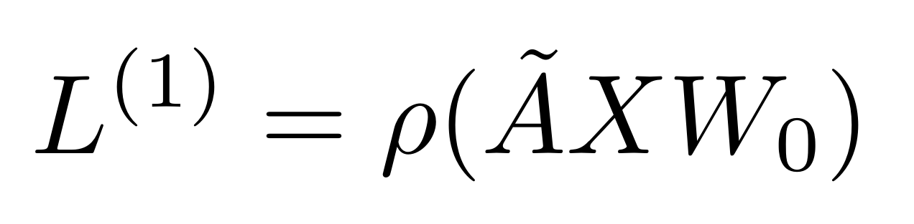

今年實在是太多事又太忙碌了，根本沒時間更新 blog，記錄一些學習的過程。甚至連閱讀的時間都沒有！不過因為近期看了兩篇在NLP 上滿經典的深度學習論文，所以趁著記憶猶新的時候，把看完的一些理解跟心得儘速記錄下來，方便日後回顧。
第一篇是 Convolutional Neural Networks for Sentence Classification 這篇論文，也就是有名的 textCNN。這篇論文是 2014 年提出的，發表在 2014 年 EMNLP 的會議論文。
這篇論文主要提出的方法，是將 CNN 捲積層的方式，應用在轉換成 word embedding 的文字上。可以直接從論文圖片的例子理解。
textcnn-graph-example
從這個圖可以看出，他就是很單純的將捲積層應用在字的向量上。假如我的 filter 想一次看三個字，那我的 filter 就會是一個 (3,k) 維度的矩陣，k 代表字被轉成多少維度的 embedding。而經過 filter 的轉換後，會再對每個 filter 輸出的向量做一次 max pooling，所以每個 filter 最後會輸出一個值，代表這個 filter 捕捉到的資訊（關於 CNN 的部分，可能會需要一些基本的理解，才能瞭解這篇論文做的事，所以可以看一下 leemeng blog 文的介紹，或是看一下李宏毅或吳恩達的開放式課程）。
想法很簡單，但達成的效果挺不錯的。這麼做會有用的原因，是因為 CNN filter 的功能，透過資料的訓練，filter 可以捕捉到該 filter 關心的詞義片段。比如某個 filter，他要看的詞是特定某三個詞，當他每隔一個詞看一次、每隔一個詞看一次，看到他關心的詞組時，這個 filter 輸出的結果就會比較大，代表它被激發了，他有看到他關心的語義片段。所以在那些短片語、短詞彙，就能捕捉到重要意義特徵的文字分類任務上，CNN 的效果會滿好的。
另一篇則是 Graph Convolutional Networks for Text Classification。這篇論文發表在 33rd AAAI Conference on Artificial Intelligence (AAAI 2019) 會議上。
這篇論文則是把 GCN (graph convolutional networks) 的模型應用在文字分類的任務上。 GCN 的意義是說，今天我的 input 是 graph (例如說網絡圖) 上 node 的 feature，那麼透過一些方法，能讓 graph 裡面點跟點的連線這些資訊，納入模型訓練之中。而 GCN 應用在 text 分類任務上，點就會變成字或是文章 (在這篇 paper 上是字跟文章都一起當做 node)，字與字的連線就用 co-occurrence 來表示，字跟文章的連線就用 TF-IDF 表示。
那麼透過 convoluation 的方式，也就是讓每一個 node 他可以包含他鄰居的資訊這樣的方法，就可能讓我們的每個 node input 的 feature，包含到網絡圖鐘的資訊，如此能夠幫助到最後的分類任務。
重點就是在文章中這個公式的 A-tilde: 
而 \(\tilde{A}\) 是這樣來的：
\[\tilde{A} = D^{-\frac{1}{2}}AD^{-\frac{1}{2}}\]
這個 \(\tilde{A}\) 包含了 graph 的資訊，讓 \(X\) 裡面的每個 node 經過 \(\tilde{A}\) 轉換後，都會得到鄰居 node 的資訊。應用在 text 中。就會是 word-node 可以得到 帶有 label 的 document-node 的訊息。
暫時一下先打這樣了！沒想到想簡單做個論文記錄也這麼難！還是等我有空的時候，再寫一些看書的閱讀心得好了。